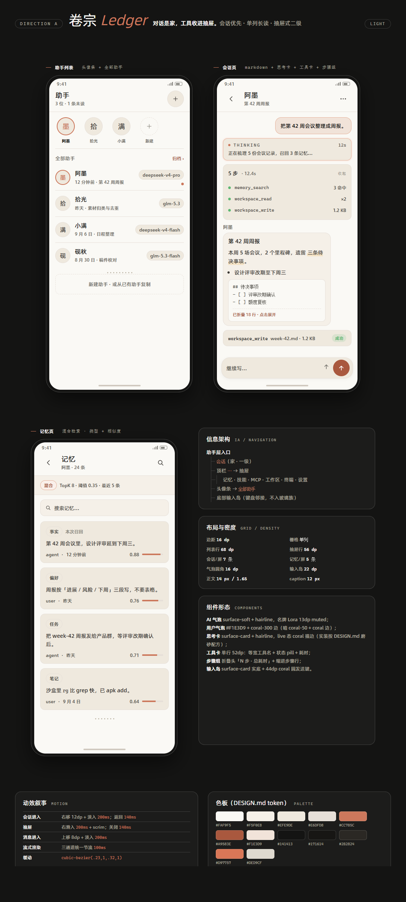
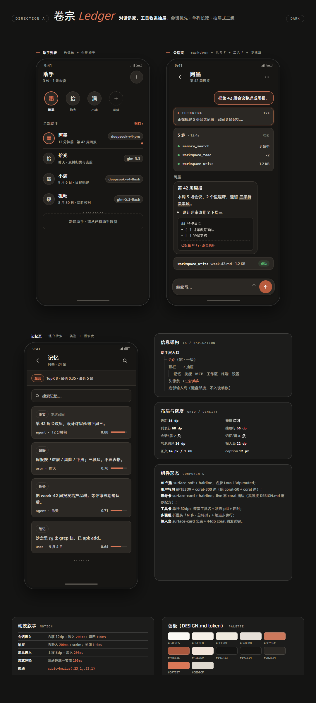
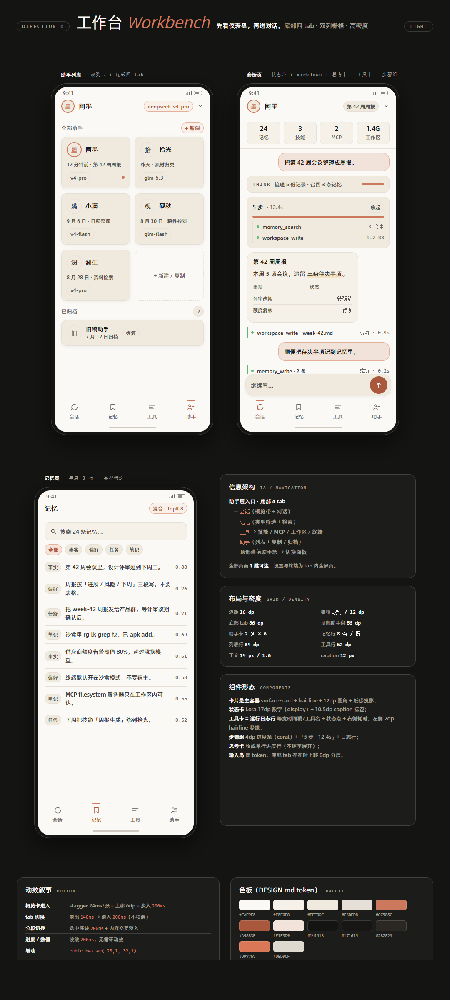
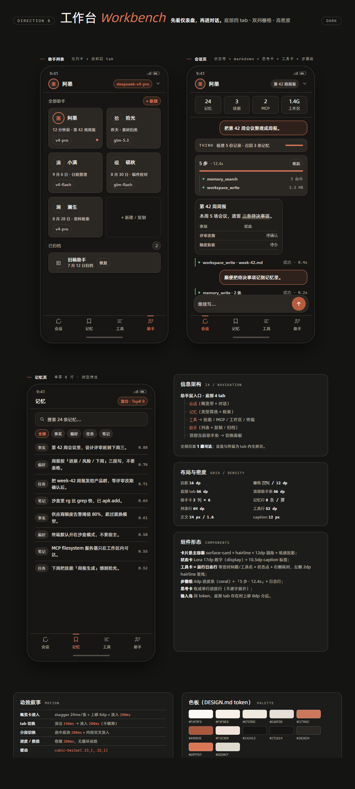
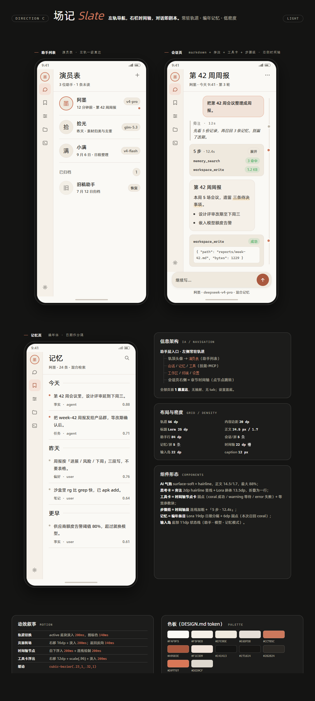
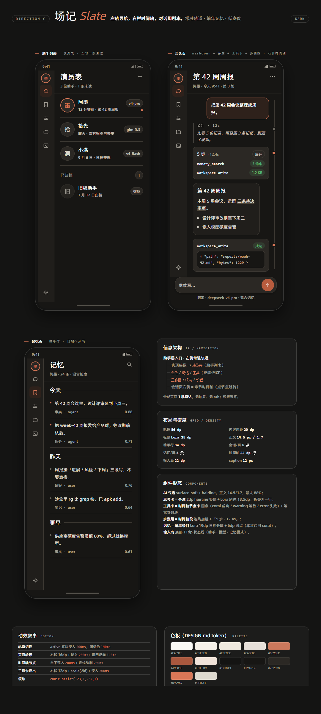

1080×2400 · 亮暗双模式 · 字体全部本地 @font-face
对话是家，工具收进抽屉。
会话优先：进入助手即落在会话列表，助手切换用顶部头像条，记忆 / 技能 / MCP / 工作区 / 终端 / 设置收进右侧抽屉（二级）。

LIGHT · 1080×2400
DARK · 1080×2400先看仪表盘，再进对话。
工具优先：底部四 tab（会话 / 记忆 / 工具 / 助手），会话页顶部是状态带与最近会话；双列栅格 + 高密度，全部页面 1 跳可达。

LIGHT · 1080×2400
DARK · 1080×2400左轨导航，右栏时间轴，对话即剧本。
叙事优先：左侧 56dp 常驻图标轨，全部页面 1 跳直达；会话页右侧是章节时间轴（旁注 / 步骤组 / 工具节点），记忆页走编年体。

LIGHT · 1080×2400
DARK · 1080×2400| 维度 | A · 卷宗 | B · 工作台 | C · 场记 |
|---|---|---|---|
| 一级导航 | 无（会话即家） | 底部 4 tab | 左侧 56dp 轨道 |
| 二级入口 | 右侧抽屉（2 跳） | tab 内分段（1 跳） | 轨道直达（1 跳） |
| 首屏 | 会话列表 | 概览仪表盘 | 会话 + 大标题 |
| 栅格 | 单列 16dp | 双列 12dp gutter | 轨道 + 单列 20dp |
| 单屏会话 / 记忆 | 7 条 / 4 条 | 5 条 / 8 条 | 5 条 / 5 条 |
| 层级承担者 | 表面色阶 + 发丝线 | 栅格 + 状态卡 | 轨道 + 排版尺度 |
| display 尺度 | Lora 17dp | Lora 17-22dp | Lora 25dp |
| 标志动效 | 抽屉横滑 200ms | 卡片 stagger 24ms/张 | 时间轴绘制 200ms |
| 主风险 | 发现性弱（2 跳） | 气质偏控制台 | 宽度吃紧（318dp 内容区） |
cubic-bezier(.23,1,.32,1)，无 scale(0)
✓ 正文 ≥14px、行高 1.6-1.7、caption ≥12px
✓ 手作记号每屏 ≤3 处
✓ 字体本地 @font-face，零 CDNdirections.md（信息架构 / 布局栅格 / 信息密度 / 动效叙事 / 组件形态 / 差异点 / 风险与适用场景）。